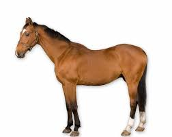

 i<!DOCTYPE html>
<html>
<body>

<style>
body {
  background-image: url("BondsChristopher2026-02-09-0007.jpg");
}
</style>

<h1>buh</h1>
<p>HORSE IMAGE</p>

<h2>HORSE</h2>



     <div id="boombox">
      <div class="boombox-handle"></div>

      <div class="boombox-body">
        <section class="master-controls">
          <input
            type="range"
            id="volume"
            class="control-volume"
            min="0"
            max="2"
            value="1"
            list="gain-vals"
            step="0.01"
            data-action="volume"
          />
          <datalist id="gain-vals">
            <option value="0" label="min"></option>
            <option value="2" label="max"></option>
          </datalist>

          <label for="volume">VOL</label>

          <input
            type="range"
            id="panner"
            class="control-panner"
            list="pan-vals"
            min="-1"
            max="1"
            value="0"
            step="0.01"
            data-action="panner"
          />
          <datalist id="pan-vals">
            <option value="-1" label="left"></option>
            <option value="1" label="right"></option>
          </datalist>

          <label for="panner">PAN</label>

        </section>

        <section class="tape">
          <audio src="52 hearts.mp3" crossorigin="anonymous"></audio>

          <!-- 			type="audio/mpeg" -->

          <button
            data-playing="false"
            class="tape-controls-play"
            role="switch"
            aria-checked="false"
          >
            <span>Play/Pause</span>
          </button>
        </section>
      </div>
      <!-- boombox-body -->
    </div>

    <script type="text/javascript">
      console.clear();

      // instigate our audio context
      let audioCtx;

      // load some sound
      const audioElement = document.querySelector("audio");
      let track;

      const playButton = document.querySelector(".tape-controls-play");

      // play pause audio
      playButton.addEventListener(
        "click",
        () => {
          if (!audioCtx) {
            init();
          }

          // check if context is in suspended state (autoplay policy)
          if (audioCtx.state === "suspended") {
            audioCtx.resume();
          }

          if (playButton.dataset.playing === "false") {
            audioElement.play();
            playButton.dataset.playing = "true";
            // if track is playing pause it
          } else if (playButton.dataset.playing === "true") {
            audioElement.pause();
            playButton.dataset.playing = "false";
          }

          // Toggle the state between play and not playing
          let state =
            playButton.getAttribute("aria-checked") === "true" ? true : false;
          playButton.setAttribute("aria-checked", state ? "false" : "true");
        },
        false
      );

      // If track ends
      audioElement.addEventListener(
        "ended",
        () => {
          playButton.dataset.playing = "false";
          playButton.setAttribute("aria-checked", "false");
        },
        false
      );

</body>
</html>

